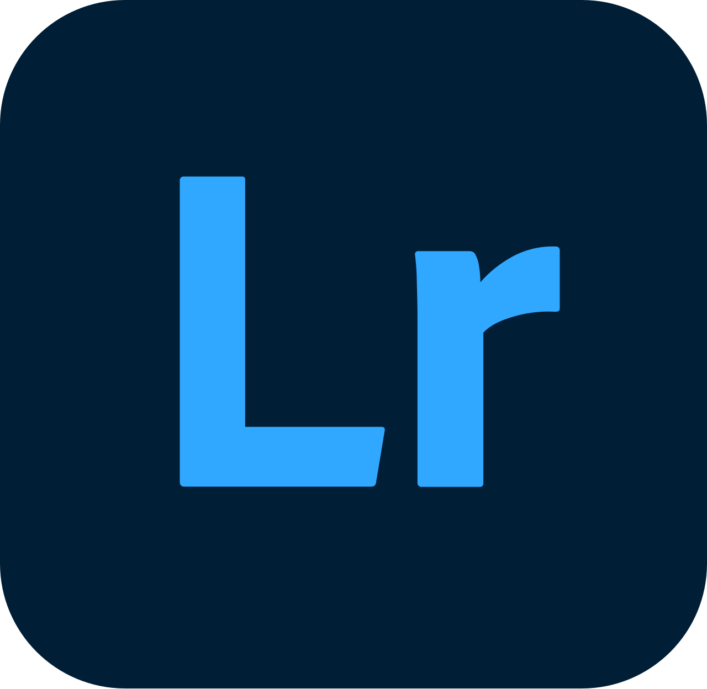
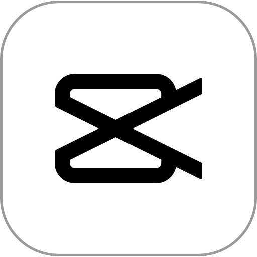
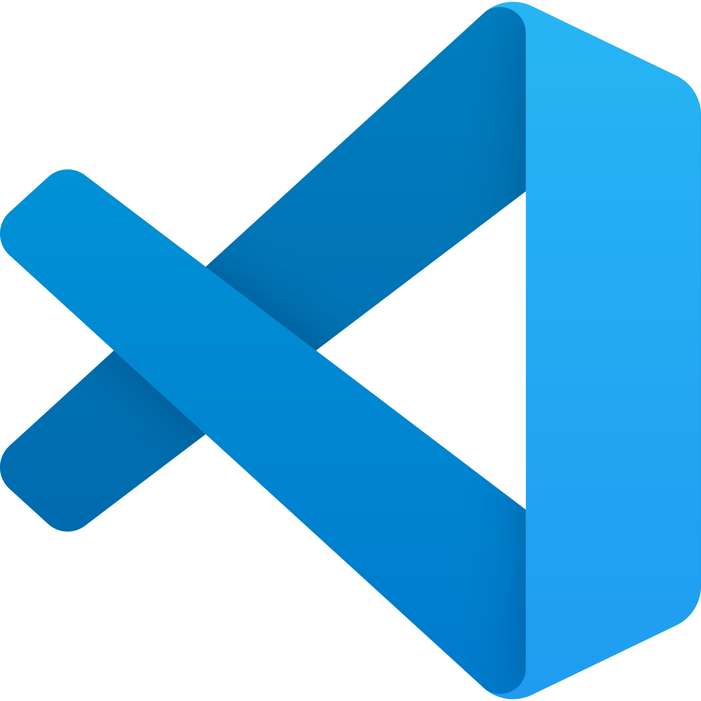

My Tools
Berikut merupakan berbagai tools yang saya pakai guna mendukung proyek saya.

Canva
Berperan dalam mewujudkan ide dan gagasan visual saya dan dituangkan dalam bentuk desain grafis.

Adobe Lightroom
Digunakan untuk prosesi editing foto guna menghasilkan hasil yang menarik dan professional.

CapCut
Membantu saya dalam prosesi editing video yang akan saya publish, serta menjadi alat guna mempermudah proses produksi video.

Visual Studio Code
Saya menggunakan Visual Studio Code sebagai editor kode utama untuk pengembangan web dan pemrograman. Serta media untuk mengembangkan skill saya di bidang Informatika.